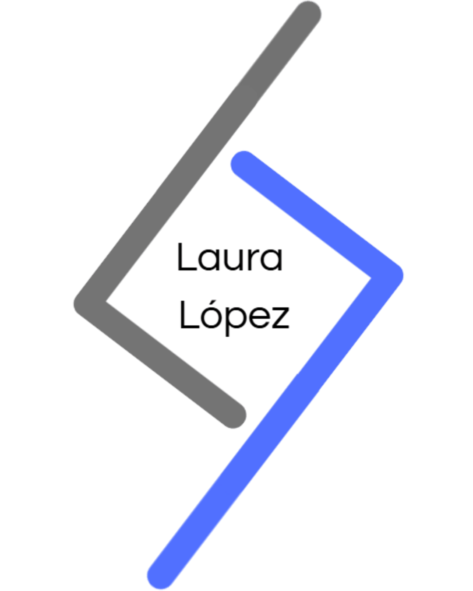

×


Además del bachiller, cuento con un grado técnico superior en informática, fué una experiencia maravillosa comprender las redes, los diferentes sistemas, softwares y servicios que se pueden ofrecer... en mi página de servicios puedes encontrar distintos servicios que he ido aprendiendo y en los que te puedo ayudar. Continúo en constante aprendizaje, enfocada en la evolución y la innovación tecnológica para mejorar cada vez más.
Hablo tres idiomas: Español, Inglés y Alemán. Los he aprendido de manera autodidacta, practicando por mi cuenta y poniéndolos en uso siempre que puedo, así que ya puedo mantener conversaciones fluidas en los tres. Me encanta seguir mejorando cada día, aprendiendo nuevas palabras, expresiones y formas de comunicarme, porque creo que los idiomas son una puerta para conocer culturas, personas y oportunidades.
Realicé un programa introductorio de diseño donde aprendí sobre creatividad y cómo comunicar ideas de manera efectiva. Además, exploré el dibujo y los conceptos fundamentales del arte, experimenté con la pintura y la composición del color... entre mucho más. El aprendizaje personal se volvió aún más enriquecedor al conocer otras mentes y perspectivas; escuchar y ver cómo cada persona expresaba su visión fue una experiencia preciosa que despertó en mí un amor aún más profundo por la creatividad y el arte.
Mi objetivo es seguir creciendo en el ámbito de la ciberseguridad y la administración de sistemas, participando en proyectos que permitan mejorar la seguridad y eficiencia de las infraestructuras tecnológicas. Me apasiona aprender constantemente y aplicar mis conocimientos de manera práctica, siempre aportando mi rayito de luz e ingenio en cada tarea. Espero poder ayudar a muchas personas a través de soluciones tecnológicas efectivas, mientras continúo desarrollando mis habilidades y explorando nuevas herramientas y metodologías.
Me encanta el potencial que tienen el arte y la tecnología en transformar ideas en experiencias